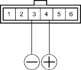
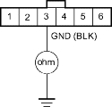

- Disconnect steering lock assembly connector (6P).
- Turn the ignition key to ACC (I) or ON (II).
- Connect the No. 4 terminal of steering lock assembly connector (6P) to the battery positive terminal and connect the No. 3 terminal to the battery negative terminal.
STEERING LOCK ASSEMBLY CONNECTOR (6P)

Terminal side of male terminals
- Check the key interlock solenoid operation. A clicking sound should be heard while the ignition key stays in ACC (I) or ON (II) and you should not be able to turn it to OFF (0) position.
Does the key interlock solenoid operate properly?
YES - Go to step 5.
NO - Faulty key interlock solenoid/switch. Replace the ignition key cylinder/steering lock assembly. 
- Check for continuity No. 3 of the steering lock assembly connector (6P) and ground.
STEERING LOCK ASSEMBLY CONNECTOR (6P)

Wire side of female terminals
Is there continuity?
YES - Go to step 6.
NO - Repair open in the wire between the No. 3 terminal of the steering lock assembly connector (6P) and ground (G401), or repair poor ground (G401).